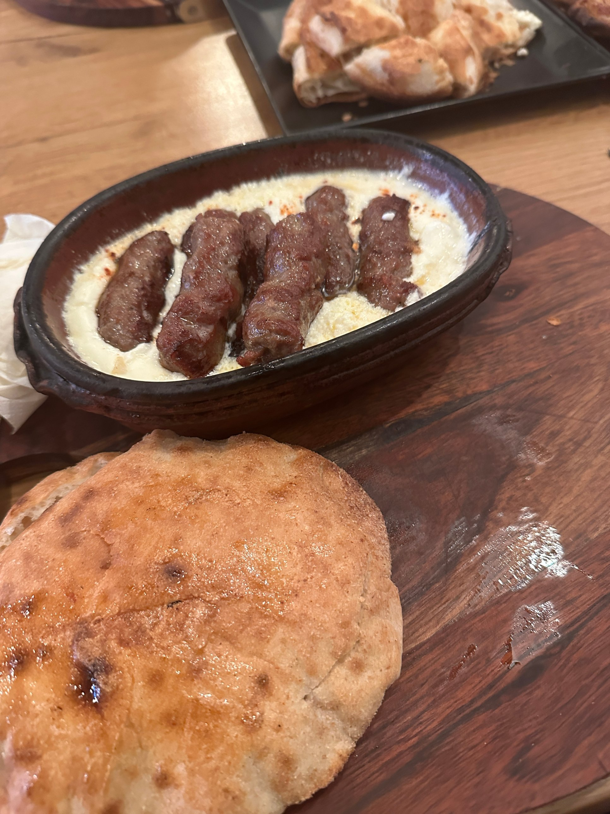

Ćevapčići mit Kajmak

45 Min.
normal
04.11.2026
| 500 g Rinderhackfleisch |
| 250 g Lammhackfleisch |
| 1 Zwiebel(n), fein gerieben |
| 3 Knoblauchzehe(n) |
| 1 TL Natron |
| 50 ml Mineralwasser |
| 1 TL Paprikapulver, edelsüß |
| Salz und Pfeffer |
| 200 g Kajmak |
| 4 Fladenbrot(e) (Lepinja) |
Zubereitung
ca. 25 Minuten
Gesamtzeit ca. 45 Minuten
Rinder- und Lammhack in eine Schüssel geben. Zwiebel fein reiben, Knoblauch pressen und beides zum Fleisch geben. Natron im Mineralwasser auflösen, zusammen mit Paprikapulver, Salz und Pfeffer dazugeben und alles mindestens 5 Minuten kräftig kneten, bis die Masse geschmeidig ist. Abgedeckt ca. 20 Minuten im Kühlschrank ruhen lassen. Mit feuchten Händen fingerdicke Röllchen von ca. 8 cm Länge formen. Grill oder Grillpfanne stark erhitzen und die Ćevapčići rundherum 8-10 Minuten braten, bis sie schön gebräunt sind. Das Fladenbrot kurz mit auf den Grill legen. Ćevapčići mit Kajmak, frischen Zwiebeln und warmem Fladenbrot servieren.